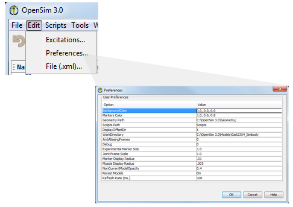

You can alter display preferences for the 3D View window and other parameters in the GUI.
|  |
|
|---|
Option Name | Default Value | Description | When Applied |
|---|---|---|---|
BackgroundColor | 0.0, 0.0, 0.0 | RGB (red, green, blue) values for the color to be used for the 3D View window background. Values range from 0.0 to 1.0. | When a new 3D View is created. Can be changed either here or using the Toolbar of the 3D View window. |
Markers Color | 1.0, 0.6, 0.8 | RGB (red, green, blue) values of the color used for the virtual markers in the model. Values range from 0.0 to 1.0. | When a new model is created or loaded |
Geometry Path | <OpenSim Install Directory>/Geometry | A list of directories separated by a semi-colon that specify where OpenSim should look for geometry files (.vtp, .stl files). When a model is loaded, the directory containing the .osim file is searched for geometry files, as well as a directory with the name "Geometry" that lives underneath it if exists. If a file is not found in these 2 locations, the directories specified in "Geomerty Path" are searched in order. The paths are specified using the Unix format and are absolute (rathert than relative). | Instantly, as well as to subsequently loaded models |
| Scripts Path | <OpenSim Install Directory>/Scripts | Directory containing OpenSim GUI scripts. These scripts will appear in the scripts drop down menu. See Scripting for more information. | Exit/Re-entry into the application to see the Scripts list updated. |
DisplayOffsetDir | X | Direction to offset display of models after the first one is loaded (X, Y or Z) | Applied when the next model is loaded |
AntiAliasingFrames | 0 | An integer number between 0 and 4 indicating how many frames are overlaid to achieve the impression of anti-aliasing (blurring of edges to reduce jaggies on straight lines) | When a new View window is opened. Be aware that a value of 2 or higher slows the display significantly. |
Debug | 0 | Debug level. Setting a value greater than 0 (max =3) outputs verbose text to the Messages window,helpful for troubleshooting but slows operations down due to I/O. | instantly |
| Experimental Marker Size | 1.0 | Display size of experimental markers | When a new data set that contains markers is loaded. |
| Joint Frame Scale | 1.0 | Scaling factor for the joint frames when displayed (Parent/Child frames). useful only in cases where model units are too large or too small. | Next time the Joint frame is hidden/shown |
| Marker Display Radius | .01 | Radius of the sphere representing one model marker | Next time a model is loaded. |
| Muscle Display Radius | .005 | Radius of the sphere representing muscle points and cylinders representing muscles in the 3D view window | Next time a model is loaded. |
| NonCurrentModelOpacity | 0.4 | A number between 0 and 1.0 indicating the opacity of models that are not designated the current model. A value of 1.0 means that non-current models are opaque, so current and non-current models look the same. A value of 0.0 makes non-current models completely transparent, so only the current model shows in the 3D View window. | Effective the first time the current model changes after setting this value |
Persist Models | On | Whether to keep track of open models, motions and camera views so that they are restored on opening the application. | Exit/Re-entry into the application. |
| RefreshRate(ms.) | 100 | How often to refresh the display while running any of the tools. | Next time a tool is run. |
| Save Movie Frames | Off | When set to off, using the movie creation feature will create a standard .avi file. When set to On, movie creation will result in a set of still frames (.tiff) in a common folder. This preference is a workaround for 64-bit machines, which do not allow the creation of .avi movies. | Next time a movie is created. |
6
{kind=link}